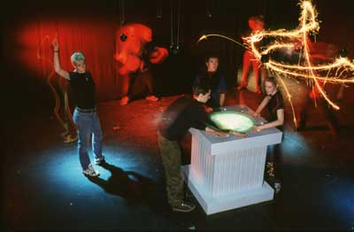
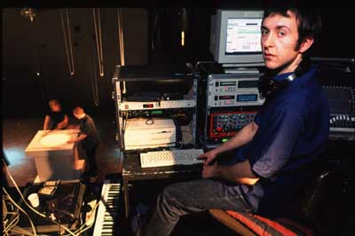
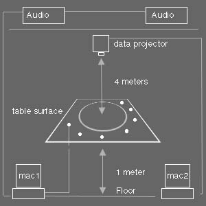
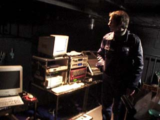
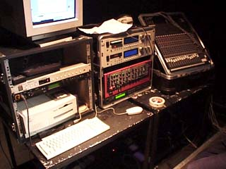
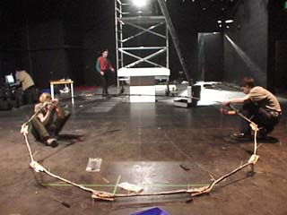
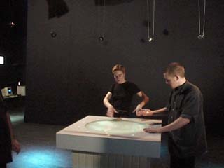
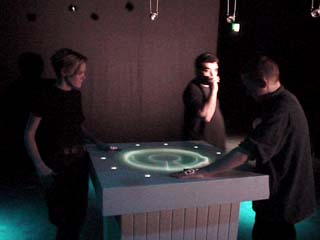
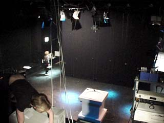

Trigger Happy



Rough Plan
Hi there. Here's a very rough plan of the work. Some images are of the set up and there is some text about the works we showed at the ICA which trigger happy was part of.
It needs a data projector hanging from the ceiling, which projects down onto the surface of the table.
The table surface is about a metre high from the floor. The Projector needs to have about 4 metres from its lense to the
surface of the table.
We have our own custom built hardware that takes in switch information from the light sensors on the top of the table
and converts it for the mac.
The signals get split so that both macs get the data from the table.
1 mac is producing all the sound via a midi set up and a few synths and samplers which then gets pumped out to
a small PA. The other mac
produces all the images which get projected onto the table.
email me andre@audiorom.com if you have any questions or email me your telephone number and I shall give you a buzz.
Thanks,
Andre

Kit used

Audio Set up

Circular Rig for speakers (We put this up if there is rigging to hang from else we wont bother)

Trigger Happy with 11 directional speakers for the sound

Trigger Happy Table

View from above showing projector in the riiging and table below
Interactive Music - Merging Participation, Architecture and Visuals through
Sound
The work of AudioRom is indicative of an emergent culture cohering the
participatory, sculptural and visual through the use of sound and music. In
contrast to a lot of other works located in the visual arts, the music is never
seen as incidental, but is regarded as central to all the pieces whether they are
an interactive installation or a CD Rom. Definitively entitling their CD Rom and
practice as Interactive Music, AudioRom take their sources from artists such as
Toshio Iwai and Brian Eno. These influences, together with an acknowledgement of
the more culturally organic shifts in expectation from audiences who are used to
club video projections mixed with music, have enabled AudioRom to create a unique
and eclectic mix of installation, game and audio visual authoring package.
All the pieces in this exhibition have been constructed as toys or games in the
sense of the arcade or console. Each one defines a different formal approach to
the fusion of visuals and music through the use of various interactive devices
and musical styles or samples. In all the installations or games the viewer is
encouraged to interact on a multi-user level so that complex layering of sound
and visuals can be built up. Although there is an outward appearance of audience
control, the artists are clear in their intention that much of the work is
preauthored and does not rely on random generative systems. The work is filmic
and designed to work as a cinematic score with the soundtrack blipping in and out
of the movie to define a meaning or even narrative to the work.
Big Bevelled Button represents a musical interaction which is heavily
intermeshed with the visuals. This is a slow ambient piece demanding that the
audience make gestural visuals to influence the music played. The visuals define
the sentiment for the music in this context with the piece being built up very
slowly.
Hyper Peppy and Big Bevelled Button are both reliant on the gestural mark to
complete the piece, but Hyper Peppy by contrast does not strictly speaking work
on a multi-user level in that each viewer competes to grab the solo tension of
the mark and music generating machine. Rather like the old Etch- a-Sketch drawing
machines, as one viewer takes over the interactive system, the previous viewer’s
composition is erased and overwritten. However, multi authoring exists in that
viewers can create their own interventions between one another to create a
complex musical and visual exchange. Trigger Happy operates slightly differently
in that up to eleven viewers can drop in various breaks and samples at their own
chosen points in the track. Rather than creating textures or marks on the visual
screen, the viewers are composing arrangements of sounds which can be switched on
or off through the interactive system. Viewers are essentially choosing their own
tracks and sequencing them live into the system using a similar approach to a DJ.
Alongside the CD Rom, these installations allow an exploration and development of
interactivity and engagement with work on a level which pushes the boundaries of
audience participation. The distinguishing and innovative feature of this work is
the equal emphasis on music and visuals within the overall form of the work.
AudioRom are setting a new precedent as field leaders for the development of
integrated music and visuals within interactive multi-media.
Helen Sloan, Curator for AudioRom Show ICA 1998